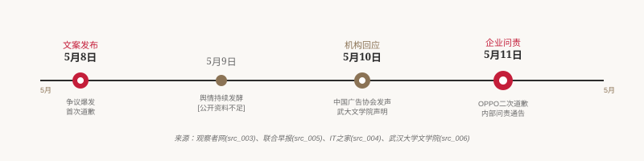
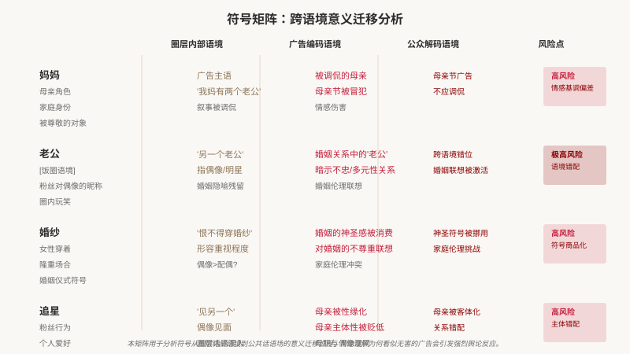
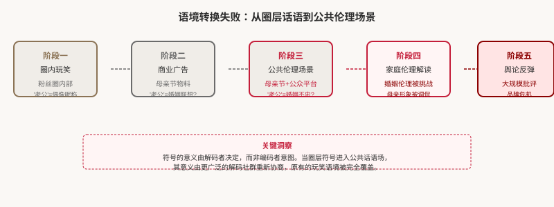
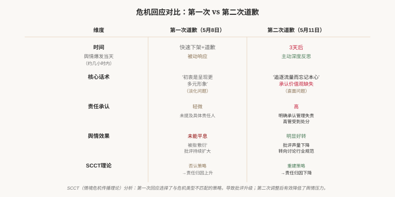
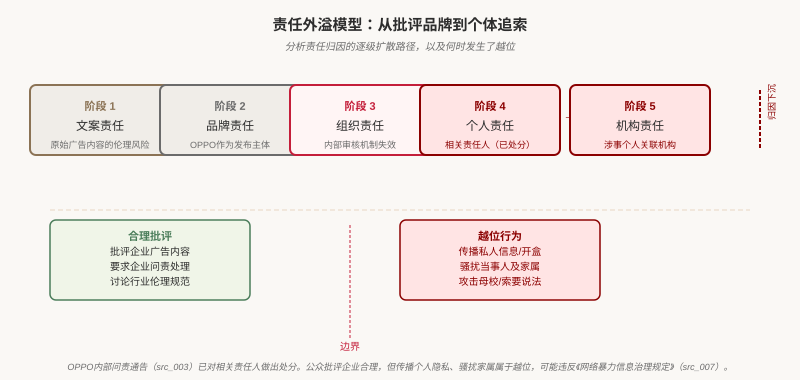
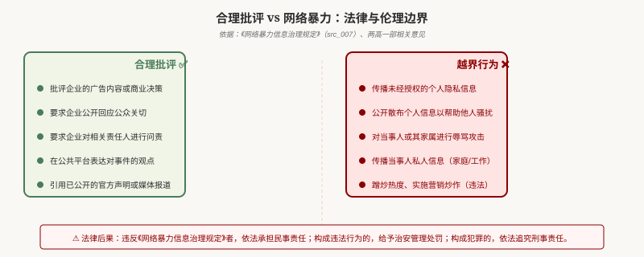
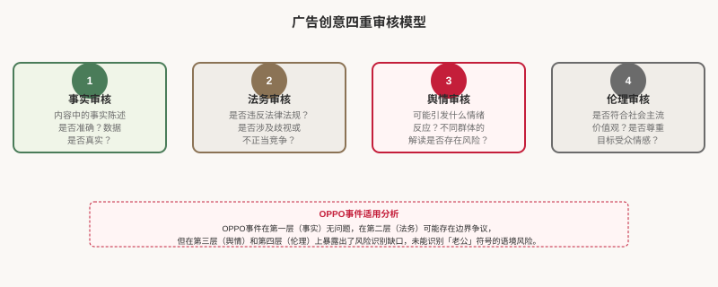

如何阅读本页
事实层
基于公开报道、官方声明、行业协会表态和政策文本，每条陈述标注来源与可信度等级。
分析层
使用传播学、符号学、母职研究和危机传播理论解释事件机制，属于解释性框架，不是事实陈述。
风险层
讨论公共批评如何可能滑向个体身份追索，但不对未经核实的具体"开盒"行为作事实认定。
边界层
本页不是司法结论，不鼓励骚扰、开盒、人肉或传播私人信息。
研究问题
为什么一个圈层内部可理解的"老公梗"，进入母亲节公共广告后会触发伦理反弹？
品牌在表达"妈妈也有自我"时，为什么可能重新落入以男性关系定义女性的叙事框架？
品牌危机中，组织责任如何在平台舆论中被个人化、身份化和机构化？
企业、学校、行业协会在舆情扩散中的回应各自承担什么公共责任？
公共批评与网络暴力之间的边界如何划定，哪些行为超出合理监督范畴？
方法说明
本页采用事件过程追踪、话语分析、符号分析和危机传播框架，不进行司法判断，不进行个人责任认定。理论模型用于解释传播机制，不是事实责任或法律责任结论。
所有事实性陈述均标注来源和可信度等级（[A]=官方/一手，[B]=主流媒体，[C]=评论分析/理论，[D]=网传/背景材料，不作为事实依据）。
事件速览：5W1H
📌 文案争议
OPPO于5月8日通过官方微博、小红书发布母亲节营销文案，包含"我妈有两个'老公'"等表述，引发巨大争议。观察者网·B
📌 品牌道歉
OPPO于5月8日当天发布第一次致歉，表示已下架物料；但有评论认为首次回应"较为简单"，未能平息争议。OPPO首次道歉·B
📌 内部问责
OPPO于5月11日发布第二次道歉和问责通告，中国区业务负责人段要辉职级直降两级，冻结调薪36个月。观察者网·B
📌 学校回应
武汉大学文学院于5月10日发声明，称极不认同该文案内容，并提及涉事团队与余姓校友的关系。武大文学院·A
📌 行业协会
中国广告协会于5月10日公开表态，称广告创意不得突破公序良俗，应摒弃"唯流量论"。中国广告协会·A
📌 网络暴力边界讨论
围绕此类品牌危机事件，有舆论担忧公共讨论可能从批评品牌滑向个体追索，引发对网络暴力边界的关注和讨论。网暴治理规定·A
事件时间线

争议文案的符号分析
广告中的核心符号在从圈层内部语境进入公共话语场时，发生了多层次的语义偏移。以下矩阵展示了"妈妈"、"老公"、"婚纱"、"追星"四个核心符号的语境迁移过程。

圈层语言与语境坍塌
语境坍塌描述了圈层内部共享的符号进入公共话语场时，编码者意图与解码者理解之间的系统性偏离。

"符号的意义由解码者决定，而非编码者意图。当圈层符号进入公共话语场，其意义由更广泛的解码社群重新协商，原有的玩笑语境被完全覆盖。"
危机传播分析：两次回应的差异
OPPO的两次道歉在时间、话术、责任承认程度上存在显著差异，直接影响了舆情走向。

情境危机传播理论（SCCT）分析
SCCT（Situational Crisis Communication Theory）认为，危机可预防程度越高，公众对组织责任的要求越高。OPPO事件属于"可预防危机"（组织本应能预见风险），组织应承担更高责任，采用重建策略而非否认策略。第一次道歉被部分媒体评价为"较为简单"，正是因为选择了淡化问题的策略，与危机类型不匹配。SCCT·C
责任外溢与批评边界
OPPO事件中，责任归因从企业逐渐扩散到个人，再从个人扩散到其关联机构，出现了责任归因的逐级下沉和扩大化。

网络暴力与法律边界
围绕OPPO事件这类品牌危机，有舆论关注公共批评与个体围猎之间的边界，引发了对网络暴力法律边界的讨论。以下基于《网络暴力信息治理规定》（网暴治理规定·A）建立判断标准：

关键法律条款：《网络暴力信息治理规定》第十条明确："任何组织和个人不得利用网络暴力事件实施蹭炒热度、推广引流等营销炒作行为。"网暴治理规定·A
综合学术框架
六重错配模型
本页面原创提出的分析框架，用于解释为何一次看似无害的母亲节广告会在公众舆论中引发如此强烈的反弹。本模型为解释性工具而非事实陈述，不构成对事实责任的最终判定。
五层失控模型
用于分析OPPO事件中从符号生产到制度失败的完整失控链条。本模型为解释性工具而非事实陈述，不构成对OPPO内部制度的实证判定。
广告创意四重审核模型
本页面提出的广告内容审核框架，建议品牌在发布任何营销内容前进行四重审核。

母职与女性主体性分析
OPPO广告文案表面上肯定"妈妈也有自我"（母职主体性话语），但实际上将母亲的自我实现锚定在"追星"这一性缘化叙事上，削弱了原本可能具有的赋权意义。
相关学术背景：密集母职概念认为，现代社会对母亲的标准被不断抬高，而商业广告对母亲形象的挪用需要极其谨慎。密集母职·C
注意：本分析不是反对母亲追星，而是指出广告将母亲的热爱锚定在男性关系上，因而容易被部分受众理解为削弱母亲主体性，而非真正赋权。
武汉大学回应分析
武汉大学文学院于5月10日发布声明，称"极不认同"该文案内容，并提及余姓同学与涉事团队的关系。武大文学院·A
从机构声誉管理角度分析，该声明有几重逻辑：
- 声誉切割：学校通过声明与涉事内容划清界限，表明立场——这是机构声誉管理中的常见策略，可理解为在舆论压力下的"切割止损"逻辑。
- 但可能强化连坐：声明提及个人姓名，将个人行为与机构关联，可能在客观效果上强化了"个人行为-机构连坐"的逻辑。
- 更理想的回应：从危机传播角度看，机构声明如能同时明确反对低俗营销与反对网暴开盒，可避免被解读为仅做单方面切割。
本节为解释性分析，不构成对武汉大学声明本身正当性的最终判断，也不意图为OPPO开脱。学校面临现实舆论压力，其声明动机和效果需要结合更完整背景评估。
中国广告协会与行业治理
中国广告协会于5月10日就"个别品牌"母亲节营销文案公开表态，称广告创意不得突破公序良俗底线，不能违背传统家庭伦理，应摒弃"唯流量论"。中国广告协会·A
这一表态反映了广告行业面临的系统性挑战：
- 唯流量论：品牌在流量压力下，可能选择更具冲击力的内容，而忽略潜在的风险。
- 节日营销伦理：家庭亲情类节日（母亲节、父亲节等）的营销需要格外谨慎，避免消费情感。
- 内容审核机制：品牌需要建立更完善的内容审核流程，包括舆情审核和伦理审核。
结论
综合判断
OPPO事件不是简单的"妈妈能不能追星"的问题，而是多重因素叠加的传播学案例：
- OPPO的核心问题：广告将"妈妈也有自我"的进步话语锚定在"妈妈有另一个老公"的男性关系符号上，在符号使用上发生了语境错配，触发了伦理敏感领域的负面联想。
- 舆论风险（需警惕）：部分讨论存在从"批评品牌"滑向"个体身份追索"的可能性，传播私人信息、骚扰家属超越了合理批评的边界。
- 武汉大学回应的局限：显示出机构在平台舆论压力下进行声誉管理的复杂处境；更理想的回应可同时反对低俗营销与反对网络暴力行为。
- 行业反思：应坚决摒弃"唯流量论"，重建内容审核与伦理风险评估机制。
- 企业治理建议：重构内容审核流程，完善分层分级的内容审核机制，恪守主流价值观底线。
来源与方法说明
以下为本页面所有信息来源的汇总，按类别分组，每条标注可信度等级：A=官方/行业组织，B=主流媒体，C=评论分析/理论，D=背景材料（不支撑具体事实）。点击来源标签可跳转至对应条目。
一、事实与报道来源
- [A]中国广告协会批个别品牌母亲节低俗营销 中国广告协会·A ↗
- [A]武汉大学文学院关于网络所传母亲节宣传文案的声明 武大文学院·A ↗
- [B]OPPO官方微博：OPPO官方道歉声明（第一次）（微博账号页，非原始正文） OPPO首次道歉·B ↗
- [B]观察者网：OPPO第二次道歉声明报道 （媒体报道引述，非官方原文） OPPO二次致歉·B ↗
- [B]观察者网：母亲节文案引争议，OPPO中国区负责人被连降两级 观察者网·B ↗
- [B]联合早报：因母亲节文案事件OPPO中国区高级副总裁被降两级 联合早报·B ↗
二、政策与法律来源
三、理论与研究来源
- [C]学术：情境危机传播理论（SCCT，Coombs） SCCT·C
- [C]学术：密集母职理论（Hays, 1996） 密集母职·C
- [C]学术：符号学与广告解码（Barthes/Fiske） 符号学·C
- [C]学术：圈层文化与公共传播 圈层文化·C